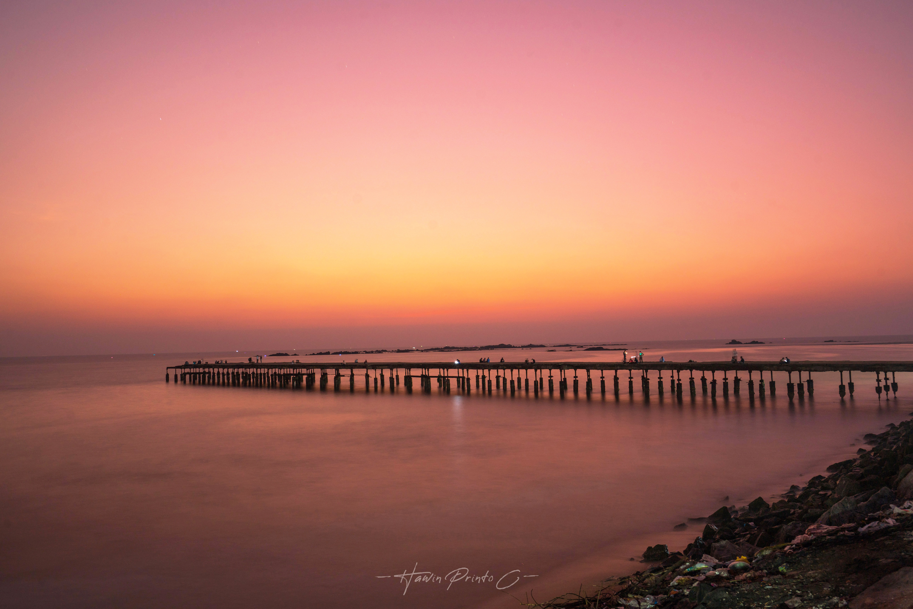
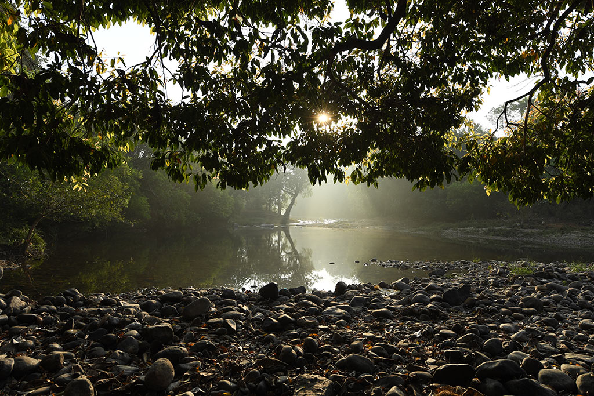

Kannur
Kannur is synonymous with theyyam - that vibrant folk art ritual which holds the spectator in as much a trance as the artiste. Kannur has a rich cultural and political legacy. While Cannanore remains the anglicised version, stories galore on how the district might have gotten its name. Kannur bears evidence of the earliest signs of human habitation with rock cut caves, burial stone circles, dolmens and menhirs being sighted in the district.
Top Spots
St. Angelo's Fort
Paithal Mala
Thalassery Pier

Aralam Wildlife Sanctuary


St. Angelo's Fort is a symbol of Kerala's colonial past, built in 1505 by Don Francesco de Almeida, the First Portuguese Viceroy in India. The fort was built with the permission of the local Kolathiri king. Soon after, Almeida decided to turn the wooden fort into one made of stone which was completed in 1507. Also known as Kannur Fort, the imposing triangular laterite fort that is now a preserved monument under the Department of Archaeology has borne witness to many conflicts
The fort overlooks the Arabian Sea, neighbouring the Mopilla Bay Harbour, a natural fishing bay, and Arakkal mosque. The fort, with its moat, ammunition dumps, tunnels, underground jails and sturdy bastions, was a formidable base making it a much sought-after structure by settlers through the ages.

Paithal Mala is a nature lover's paradise. At 6 km, it is a fairly easy trek but is located 65 km away from the town and 4500 ft. above sea level.
Paithal Mala, one of the highest peaks in the district, is popular among photographers. It is home to many endemic species thanks to its location in the Western Ghats. A delightful waterfall, Ezharakundu, offers trekkers a chance to refresh themselves while exploring the trail.
Locally called Kadalpalam, literally meaning sea bridge, the Thalassery pier was built to do exactly that - serve as a bridge between the big ships and the shore, when Thalassery was a bustling commercial hub.
The bridge, 500-ft-long, was built by the British in the 20th century. The pier is a beautiful sight as it stands looking out into the Arabian Sea, surrounded by fishing boats. Many films have been shot here for its picturesque settings. The pier stands as a relic from the colonial era, a witness to so many historical events, as life carries on around it.
The northernmost wildlife sanctuary in Kerala, Aralam in the Western Ghats stretches over 55 sq. km. area of forests. Established in 1984, the Aralam Wildlife Sanctuary is home to the Malabar Giant Squirrel, elephants, spotted deer, gaur, sambar, barking deer, Nilgiri Langur and Hanuman Langur.
Visit the tallest peak in the area, Katti Betta, for an even more breathtaking view of the area. Aralam is a dream spot for trekkers who want to explore beyond what the day trek has to offer. Ambalappara is a three day trek with an overnight stay at the Ambalappara watchtower. Meenmutty Falls is the other option, a four hour long trek, with a guide.